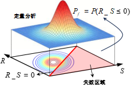
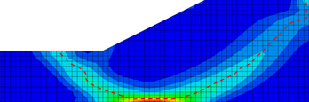
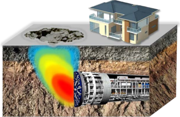
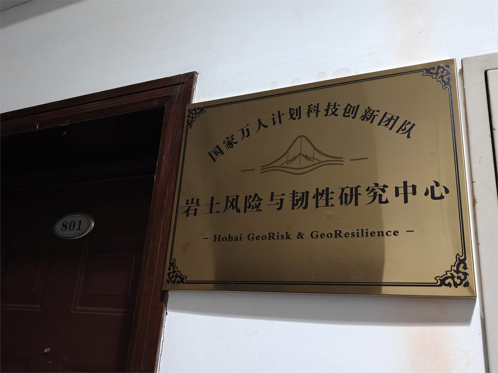
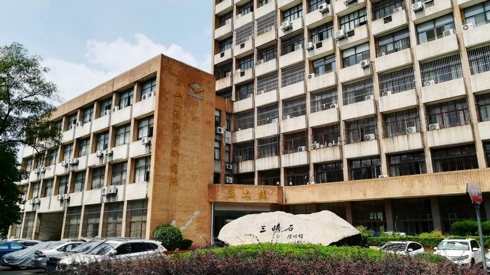

左晋宇
博士后,主要研究方向：边坡工程与风险评估。
01 / Research Team

国家万人计划领军人才，河海大学岩土风险与韧性研究中心主任。主要从事岩土工程风险分析与可靠性控制、边坡工程与滑坡预测预警、地下空间工程安全与岩土灾害韧性防控研究。
博士后,主要研究方向：边坡工程与风险评估。

博士后，入选澳门青年学者和江苏省卓越博士后计划。主要从事岩土工程不确定性表征与随机场建模、可靠性分析与风险评估、高效计算方法及智能算法研究。

2021级博士研究生,主要研究方向：地震边坡稳定性分析、岩土工程物质点法开发、岩土工程多场耦合分析。

2023级博士研究生,主要研究方向：区域滑坡易发性区划、边坡稳定性分析、岩土可靠度方法、GIS软件开发。

2023级博士研究生,主要研究方向：地震边坡。

2024级博士研究生,主要研究方向：基于岩土可靠度理论的公路边坡多级韧性量化与风险分析。

2025级博士研究生,主要研究方向：岩土数值大变形模拟、岩土高效可靠度计算方法研究。

2025级博士研究生,主要研究方向：岩石边坡可靠度分析、节理边坡精细化建模。

2026级博士研究生,主要研究方向：区域滑坡。

2026级博士研究生

2026级博士研究生,主要研究方向：机器学习。

科研助理，主要研究方向：多源信息融合的采空区三维地质建模与灾害预警

2024级硕士研究生,主要研究方向：机器学习。

2024级硕士研究生,主要研究方向：区域滑坡易发性。

2025级硕士研究生,主要研究方向：地震作用下土体应变软化及屈服加速度演化。

2025级硕士研究生,主要研究方向：岩土大变形模拟、高效可靠度计算、围岩应力以及岩石爆破。

2025级硕士研究生,主要研究方向：边坡失效预测与风险防控。

2026级硕士研究生

2026级硕士研究生

2026级硕士研究生

2026级硕士研究生
02 / Research Directions

围绕岩土工程系统不确定性、失效概率、可靠性指标、风险传递与控制决策，建立面向工程安全的风险分析方法体系。

面向边坡稳定、滑坡孕灾机理、监测数据融合、变形趋势识别与临灾预警，服务重大工程和自然边坡风险防控。

关注城市地下空间、隧道与地下结构建设中的围岩稳定、施工风险、长期服役安全和韧性运行维护问题。

研究灾害冲击下岩土系统的承灾、恢复与适应能力，发展面向多灾种耦合和全生命周期治理的韧性防控理论。
03 / Team News



04 / Contact